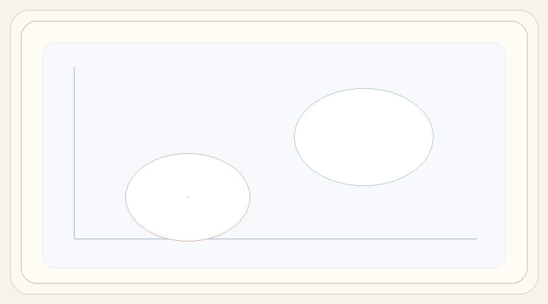

Step 1
Debiased Contrastive Pairs
Generate balanced positive and negative prompts, then keep only the concept-bearing token spans so the direction isolates the intended attribute.
-
A portrait of a frowning person in warm window light.
+
A portrait of a smiling person in warm window light.
-
A close-up shot of a frowning face beside a curtain.
+
A close-up shot of a smiling face beside a curtain.
-
A studio photo of a frowning figure wearing a blue shirt.
+
A studio photo of a smiling figure wearing a blue shirt.
Step 2
Difference-of-Means Direction
Pool the selected token embeddings, average each side, take their difference, and normalize once to obtain the global steering direction ds.
ei+
=
pool(
E(pi+)[Si+]
)
ei-
=
pool(
E(pi-)[Si-]
)
s
=
mean(e+)
-
mean(e-)
,
ds
=
s
∥s∥2
Difference-of-means over pooled concept-token embeddings.

The pooled negative and positive embeddings define two centroids; their difference becomes the steering axis that is then added back into the prompt representation.